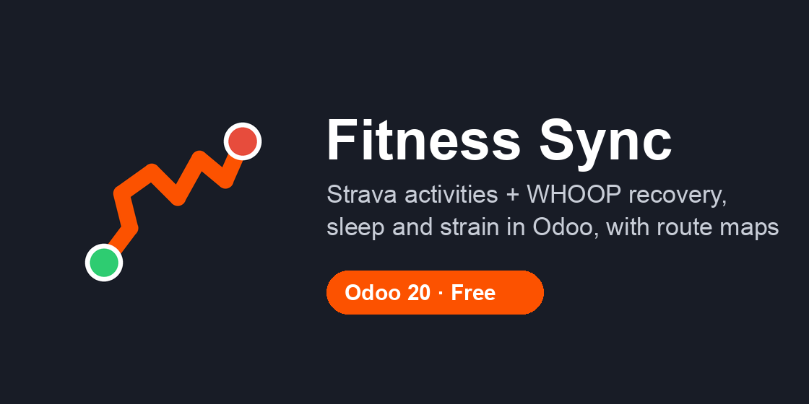

Your training, recovery and sleep in Odoo, next to everything else you track.

WHOOP invalidates the previous refresh token every time a new one is issued. This module refreshes tokens only when they have actually expired, saves a new token before using it (so a failed sync can't lose it), and lets only one process refresh at a time. If a provider rejects the connection, it is marked Reconnect needed instead of retrying in a loop.
requests library (included with Odoo).